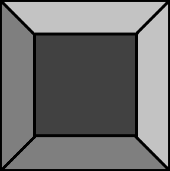
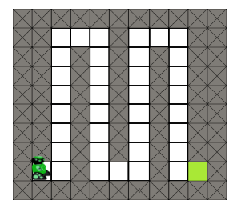
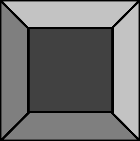
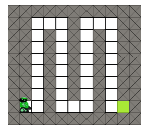
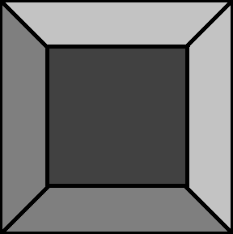
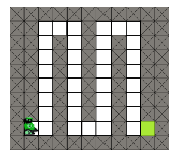
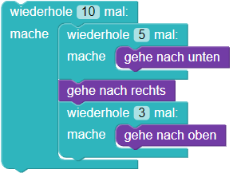

Hindernislauf
  



Programmiere den Roboter:
Der Roboter soll das grüne Feld am Ende des Parcours erreichen, ohne gegen Hindernisse zu laufen.
Du wirst dafür
mehrmals den Bausteine wiederhole ineinander verschachtelt verwenden
müssen, so wie hier gezeigt:


eine for-Anweisung in einer anderen schreiben,
for i in range(10):
for loop in range(5):
unten()
rechts()
for j in range(3):
oben()
Der Weg nach oben ist 10 Schritte lang.